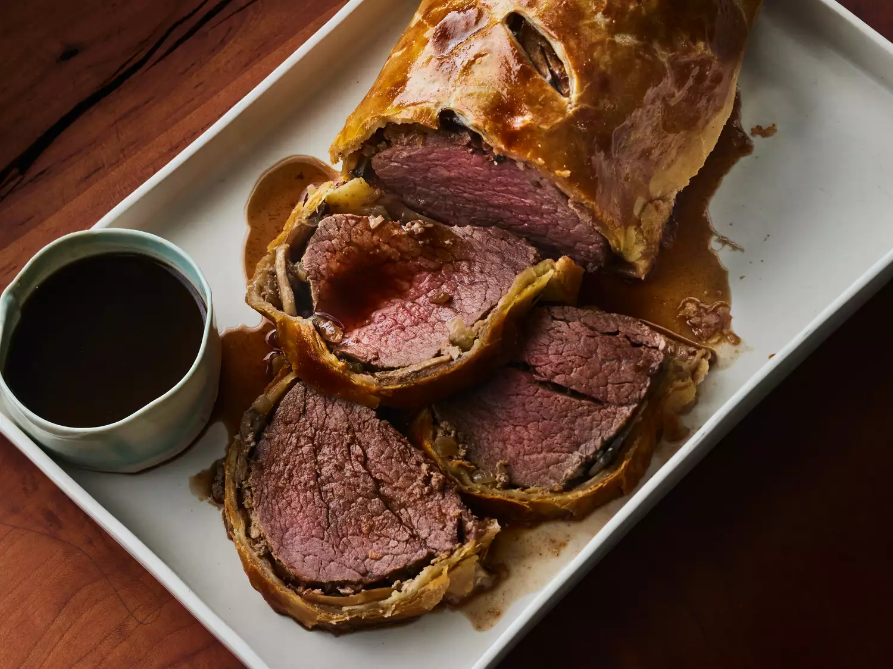

Ingredients
For the Beef:
- 2 lbs beef tenderloin (center cut)
- 2 tablespoons olive oil
- Salt and pepper to taste
For the Duxelles:
- 1 lb mushrooms, finely chopped
- 2 shallots, minced
- 2 cloves garlic, minced
- 2 tablespoons butter
- Fresh thyme
For Assembly:
- 6-8 slices prosciutto or Parma ham
- 2 tablespoons Dijon mustard
- 1 sheet puff pastry, thawed
- 1 egg, beaten (for egg wash)
Instructions
- Sear the Beef: Season the beef tenderloin generously with salt and pepper. Heat olive oil in a large skillet over high heat. Sear the beef on all sides until browned (about 2 minutes per side). Remove and brush with Dijon mustard. Let cool completely.
- Prepare the Duxelles: In the same skillet, melt butter over medium heat. Add shallots and garlic, cooking until softened. Add finely chopped mushrooms and thyme. Cook until all liquid has evaporated and the mixture is dry and paste-like (about 15-20 minutes). Season with salt and pepper. Let cool completely.
- Assemble the Wellington: Lay out a large piece of plastic wrap. Arrange prosciutto slices in an overlapping layer. Spread the mushroom duxelles evenly over the prosciutto. Place the cooled beef in the center and use the plastic wrap to roll everything tightly around the beef. Twist the ends to seal and refrigerate for 15-20 minutes.
- Wrap in Pastry: Roll out the puff pastry into a rectangle large enough to wrap the beef. Remove the plastic wrap from the beef and place it in the center of the pastry. Fold the pastry over the beef, sealing the edges with egg wash. Trim any excess pastry. Place seam-side down on a baking sheet.
- Bake: Preheat oven to 425°F (220°C). Brush the entire Wellington with egg wash and score the top decoratively if desired. Bake for 25-30 minutes for medium-rare, or until the pastry is golden brown and the internal temperature reaches 135°F.
- Rest and Serve: Remove from oven and let rest for 10 minutes before slicing. Use a sharp serrated knife to cut into thick slices. Serve immediately with your favorite sides.